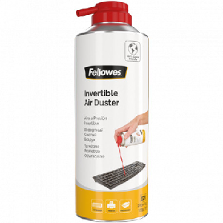
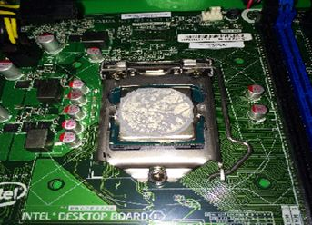

Executar els procediments de neteja integral i restauració del sistema de refrigeració, seleccionant els productes químics i l'instrumental adequat per garantir la integritat electrònica i recuperar l'eficiència tèrmica original de l'equip.
Dins de les operacions de manteniment preventiu, la higiene tècnica constitueix la intervenció física més directa sobre el maquinari. Lluny de ser una qüestió purament estètica, la neteja interna és un requisit funcional crític: l'acumulació de pols i partícules en suspensió actua com un aïllant tèrmic que obstrueix els fluxos d'aire, provocant sobreescalfament i, en entorns humits, pot esdevenir conductora i provocar curtcircuits en els circuits impresos.
Tanmateix, la neteja d'equips electrònics comporta riscos específics. L'ús de productes de neteja domèstics, draps inadequats o tècniques agressives pot generar descàrregues electrostàtiques (ESD), corrosió química o danys mecànics en components microscòpics. En aquest OA, definirem els estàndards de la indústria per a la higienització segura, l'ús de dissolvents orgànics com l'alcohol isopropílic i el procediment correcte per a la renovació dels materials d'interfície tèrmica (pasta tèrmica), una operació vital per allargar la vida útil dels processadors.
La intervenció física sobre circuits electrònics requereix l'ús d'agents químics i materials específics que garanteixin l'eliminació de contaminants sense comprometre la integritat elèctrica dels components. L'enemic principal a combatre és la pols (que actua com a aïllant tèrmic i pont elèctric si absorbeix humitat) i els residus greixosos.
L'agent de neteja estàndard en la indústria és l'Alcohol Isopropílic (Isopropanol), que ha de tenir una puresa superior al 90% (idealment 99,9%). A diferència de l'alcohol etílic de farmaciola (que conté aigua i additius), l'isopropanol és un dissolvent orgànic no polar, la qual cosa significa que dissol eficaçment olis i pastes tèrmiques, s'evapora gairebé instantàniament sense deixar residus conductors i no provoca oxidació en els contactes metàl·lics. L'ús d'aigua, detergents domèstics o netejavidres està estrictament prohibit a l'interior d'un xassís, ja que els seus residus poden provocar curtcircuits o corrosió a llarg termini.
Pel que fa a l'instrumental mecànic, el tècnic ha de disposar d'un sistema de propulsió d'aire (compressor amb filtre d'humitat o esprai d'aire comprimit) per al desallotjament de partícules. Per a la neteja de contacte, s'utilitzen raspalls de truges sintètiques amb propietats ESD (descàrrega electroestàtica) per evitar generar electricitat estàtica durant la fricció, i draps de microfibra d'alta densitat que no desprenguin fibres que puguin quedar atrapades entre els pins dels xips.

Esprai d’aire comprimit
L'acumulació de pols en els dissipadors (heatsinks) redueix dràsticament la superfície d'intercanvi tèrmic, forçant els ventiladors a girar més ràpid i reduint la vida útil dels components. El procediment de neteja ha de seguir un ordre lògic, començant pels filtres antipols externs i avançant cap a l'interior.
Aquest ordre lògic respon a dos principis físics bàsics: la gravetat i la prevenció de la contaminació creuada. Si netegem l'interior sense haver netejat abans l'exterior, en obrir la caixa o manipular els filtres, tota la brutícia acumulada a fora caurà sobre els components electrònics nets.
Per garantir la màxima eficiència i evitar haver de repetir passos, l'ordre d'actuació estricte és el següent:
Un punt crític de seguretat durant aquest procés és el bloqueig mecànic dels rotors. Quan s'aplica aire comprimit a alta pressió sobre un ventilador, aquest pot girar a revolucions molt superiors a les de disseny, generant un corrent elèctric invers (Back EMF) que retorna cap a la placa base. Aquest voltatge no regulat pot cremar fàcilment el controlador del ventilador o altres components sensibles.
La pasta tèrmica (Thermal Interface Material) és un compost viscós la funció del qual és omplir les imperfeccions microscòpiques entre la superfície del processador i la base del dissipador per maximitzar la transferència de calor. Amb el temps, la pasta s'evapora, deixant un residu sòlid i esquerdat que perd conductivitat. Es recomana la seva substitució cada 2-3 anys.

Pasta tèrmica damunt que cal substituir en el processador
El procés de substitució exigeix una neteja meticulosa:
Les pantalles modernes (LCD/OLED) compten amb recobriments químics antireflectants extremadament sensibles. L'ús de productes netejavidres basats en amoníac o alcohol d'alta concentració destrueix aquesta capa, causant taques permanents. La neteja s'ha de realitzar exclusivament amb productes específics o amb un drap humitejat amb aigua destil·lada.
És imperatiu no polvoritzar mai líquid directament sobre la pantalla. La gravetat farà que el líquid penetri pel marc inferior on s'ubiquen els circuits de control, provocant fallades irreversibles. El líquid s'ha d'aplicar sempre al drap. Pel que fa als teclats, es tracten desmuntant els casquets i utilitzant aire comprimit i alcohol per desinfectar.